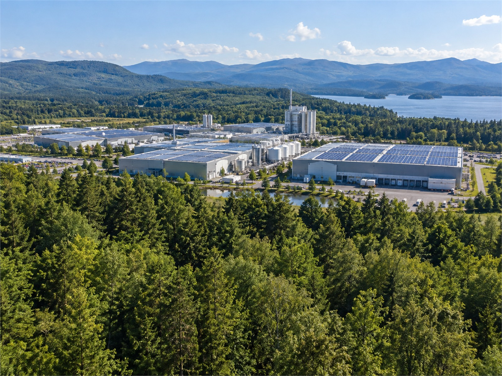

1966년 산업용 섬유로 시작해 지금은 첨단소재·산업인프라·미래소재·디지털 네 사업을 합니다.
최고 · 혁신 · 책임 · 신뢰
불량이 나오면 원인을 찾기 전까지 라인을 다시 돌리지 않습니다.
개선 제안은 누구나 내고, 한 달 안에 시험합니다.

안전 기준을 못 맞춘 작업은 납기가 급해도 멈춥니다.
고객사에는 시험 성적서 원본을 고치지 않고 그대로 보냅니다.